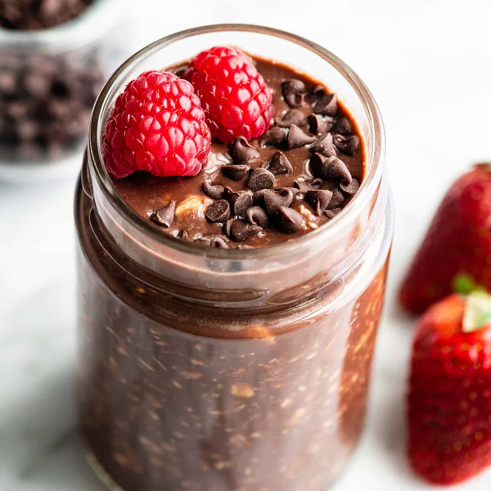

DOUBLE CHOCOLATE OVERNIGHT OATS

This healthy chocolate overnight oats recipe is a quick and easy, make-ahead breakfast. It only takes 5 minutes and 5 ingredients to mix up these chocolate oats, which are a gluten-free, dairy-free vegan-friendly meal prep breakfast!
Ingredients.
- 3 cups oat milk (or any type of milk)
- 2 cups old fashioned rolled oats
- ½ cup chia seeds
- ½ cup chocolate chips
- 4 - 6 tablespoons pure maple syrup (or honey)
- 4 tablespoons cocoa powder
- 2 teaspoons vanilla extract
Steps:
- In a medium mixing bowl, stir together all of the ingredients. Add 4 - 6 tablespoons of maple syrup (or honey), depending on how sweet you prefer your oats.
- Spoon the oats into small jars or Tupperware and place the lid on. This recipe makes 4 servings (I like to divide my oats into 4 serving-size jars for convenience).
- Let the oats sit for at least 4 hours and preferably overnight. Add your favorite toppings (like nuts, berries, chocolate chips, maple syrup etc.) before serving. Overnight oats are typically served cold. Store your oats in the fridge for up to 5 days.